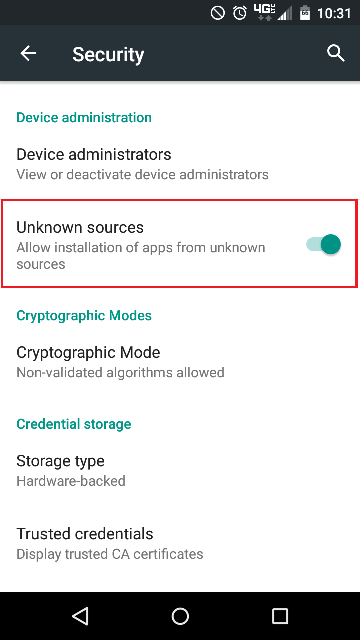
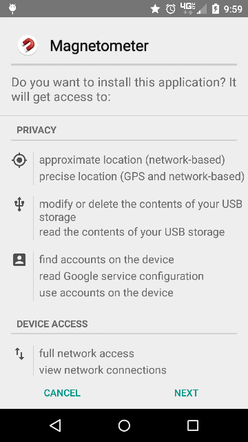
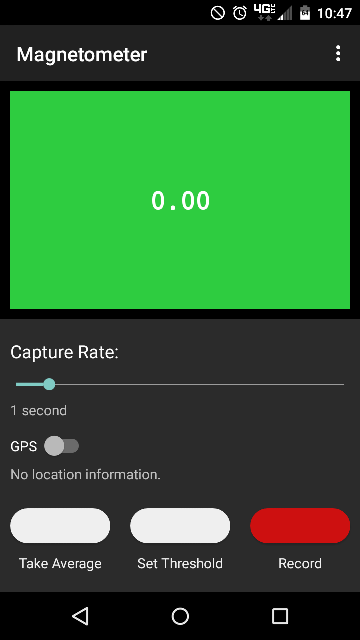
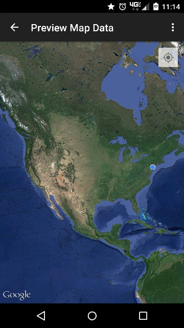
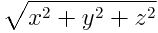
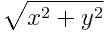

Magnetometer Android App
This app is in pre-release. Do not redistribute it without the consent of the authors.Download APK
Documentation
- How to install
- Navigating the app
- Recording data
- How to preview/save data
- Math/calculations involved
- Other information
How to install
Go into Settings > Security and turn on allowing apps from unknown sources. Transfer the downloaded APK to your Android device. This can be done through USB or cloud storage such as Google Drive. Navigate to the APK on your device and tap it. You will be asked to install it.

Navigating the app
Overflow MenuThe first screen you will see is for data collection. In the top right corner you will find the Overflow Menu, which will bring up a list of other things you can do within the app such as Preview Map Data, Save Data, Calibrate Sensor, or change the Settings.
Sensor Data Display
The large green box below that displays the sensor data. When no Threshold or Average has been set, this will display 0.00. To see the live readings from the magnetometer sensor, touch and hold anywhere in this box. The speed it will update is controlled by the slider below it called the Capture Rate.
Capture Rate
Use the slider to control the Capture Rate and test it by touching and holding the green box. Farthest to the left is Continuous mode which will update as fast as the sensor sees data, while farthest to the right captures every 10 seconds.
GPS
Below the Capture Rate is the GPS switch. It is not necessary to use the GPS. It is there only if you want to record location information for outdoor sensing. To turn it on push the switch to the right. If you do not have GPS enabled it will ask you to do so. The text below the GPS switch will tell you when it has a fix on your location.
Recording Buttons
The three buttons below the GPS switch are Take Average, Set Threshold, and Record.
Take Average: this will take the input sensor data and average it. To stop it just hit Stop Average (the same button). The value displayed in the middle of the Sensor Data Display is the current threshold value to set off alerts.
Set Threshold: this will read in the current sensor data and use that instance to set the threshold to set off alerts. This will not change unless you hit Set Threshold again or use the average.
Record: touching this button will begin recording. It will flash on and off to remind you that is currently recording. It will also display an asterisk (*) to let you know that you have unsaved data. The data includes (when exporting to CSV) x, y, and z magnetic field data, horizontal (compass), total field, average, threshold, time, color (relative), latitude, and longitude (if GPS was enabled).

Recording the data
Once you have tapped either Take Average or Set Threshold, you are ready to start recording. Make sure your Capture Rate is correct and if you want GPS location data then the GPS should be switched to on.Tap the Record button once to begin recording, tap it again to stop. Remember that you can check the live sensor data by touching and holding the Sensor Data Display (the big colorful box).
Note, you may want to change some settings from the Overflow Menu such as Alert Sensitivity or the Magnetic Source Comparison. The Magnetic Source comparison can have a great affect on the alerts. You can pick from Z, Horizontal, or Total Field comparisons. You may also want to turn off the bell sound depending on your use case.
How to preview/save data
To preview data within the app you must have GPS locations recorded. Assuming that you do, after you have recorded your data, tap the three dots in the top right corner to open the Overflow Menu. Tap Preview Map Data. Your points will be displayed on the map. If you would like a heatmap view, hit the three dots while looking at the map and tap Toggle Heat Map. Only data points that are not green will display here. If you just want to preview the CSV data, you will need to download a file explorer and navigate to the 'magnetoReadings' folder on your main storage. I recommend FX File Explorer. Note that the data must be saved before you can view it through this method.
Math/calculations involved
Total Field calculation: Horizontal (Compass) calculation:
 Alert Thresholds, colors go from green, light/dark yellow, light/dark orange, red, violet:
High sensitivity (% higher than threshold):
5%, 10%, 15%, 20%, 25%, 30%
Normal sensitivity:
10%, 20%, 30%, 40%, 50%, 60%
Low sensitivity:
20%, 30%, 40%, 50%, 60%, 70%
Other information
Notes on saving:You can only have one recording at a time. That means that after a recording is done, you either have to save it or throw it away in order to start a new one. You will be shown an alert if you have not saved and are trying to start a new recording.
Every time you save something, even if it is just sending it to GMail or Google Drive, the local files will be saved as well. In settings, there is an option to delete these local files. If you have done a lot of recording, it might be a good idea to periodically clear this folder out when you know you no longer need them.
Notes on continuous Capture Rate:
You should not be able to record while using continuous Capture Rate. If you do, it has a chance of crashing the application due to the extremely large number of data points.
Notes on Calibration:
Frequently bringing your device near magnetic fields and using it for this purpose can throw off the built in magnetometer. It is easy to reset it however. By going into the Overflow and tapping Calibrate Sensor, you will be given instructions on how to do so. Simply wave your phone in a figure 8 motion for several seconds. This should reset the sensor. This should likely be done every couple of recordings.
Back to Top